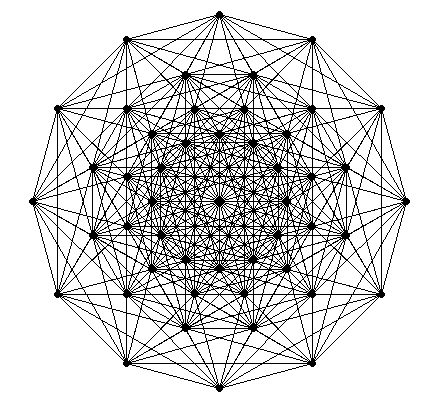
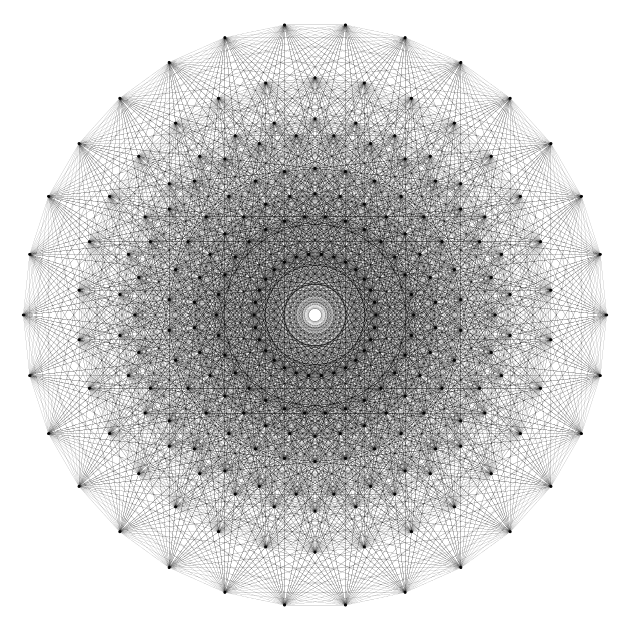

The E8 root polytope
The E8 root polytope, its vertices and its edges
The E8 root polytope, also known as the \(4_{21}\) polytope is a 8-dimensional polytope. The Cartesian coordinates of its vertices are described in the above linked Wikipedia page. It has 240 vertices, that can be separated in two sets. The first set is obtained from \((\pm 2, \pm 2, 0, 0, 0, 0, 0, 0)\) by taking an arbitrary combination of the signs and an arbitrary permutation of the coordinates. This gives \(2^2 \tbinom{8}{2} = 112\) vertices, that one can obtain as follows in R:
combs <- arrangements::combinations(8L, 2L)
vertices1 <- NULL
for(i in 1L:nrow(combs)){
comb <- combs[i, ]
for(x in c(-2, 2)){
for(y in c(-2, 2)){
zeros <- rep(0, 8L)
zeros[comb[1L]] <- x
zeros[comb[2L]] <- y
vertices1 <- rbind(vertices1, zeros)
}
}
}Indeed we get \(112\) vertices, in a matrix with stupid row names:
str(vertices1)
## num [1:112, 1:8] -2 -2 2 2 -2 -2 2 2 -2 -2 ...
## - attr(*, "dimnames")=List of 2
## ..$ : chr [1:112] "zeros" "zeros" "zeros" "zeros" ...
## ..$ : NULL
head(vertices1)
## [,1] [,2] [,3] [,4] [,5] [,6] [,7] [,8]
## zeros -2 -2 0 0 0 0 0 0
## zeros -2 2 0 0 0 0 0 0
## zeros 2 -2 0 0 0 0 0 0
## zeros 2 2 0 0 0 0 0 0
## zeros -2 0 -2 0 0 0 0 0
## zeros -2 0 2 0 0 0 0 0The second set of vertices is obtained from \((\pm 1, \ldots, \pm 1)\) by taking an even number of minus signs. As noted in the Wikipedia article, this amounts to say that the sum of the coordinates is a multiple of \(4\).
vertices2 <- NULL
grd <- as.matrix(expand.grid(rep(list(c(-1, 1)), 8L)))
for(i in 1L:nrow(grd)){
v <- grd[i, ]
if(sum(v) %% 4 == 0){
vertices2 <- rbind(vertices2, v)
}
}This gives \(128\) vertices, again in a matrix with stupid row names:
str(vertices2)
## num [1:128, 1:8] -1 1 1 -1 1 -1 -1 1 1 -1 ...
## - attr(*, "dimnames")=List of 2
## ..$ : chr [1:128] "v" "v" "v" "v" ...
## ..$ : chr [1:8] "Var1" "Var2" "Var3" "Var4" ...
head(vertices2)
## Var1 Var2 Var3 Var4 Var5 Var6 Var7 Var8
## v -1 -1 -1 -1 -1 -1 -1 -1
## v 1 1 -1 -1 -1 -1 -1 -1
## v 1 -1 1 -1 -1 -1 -1 -1
## v -1 1 1 -1 -1 -1 -1 -1
## v 1 -1 -1 1 -1 -1 -1 -1
## v -1 1 -1 1 -1 -1 -1 -1So here is our matrix of \(240\) vertices:
vertices <- rbind(vertices1, vertices2)Well. Now, how to get the edges of the polytope? An edge is a pair of connected (adjacent) vertices, and it is better to store them as pairs of vertex indices (the row indices of our vertices matrix).
My first attempt was to resort to my package cxhull. Indeed, the E8 root polytope is convex, therefore its convex hull is itself, and the cxhull function of the cxhull package provides the edges of the convex hull. Therefore, I ran:
library(cxhull)
hull <- cxhull(vertices, triangulate = FALSE)What a disaster! Do not run this code! It totally crashed my laptop. Perhaps that can work with more RAM, I don’t know (I have only 8 Gb). I searched and I searched on the web, with no luck, I didn’t find these edges. So I decided to search another computational geometry library, able to get these edges. I thought of the C library cddlib. I’m not a star in C but this library is wrapped in the Julia library CDDLib.jl. No luck: this wrapper is incomplete and the vertex adjacency was not available in this library. Then I opened an issue on the Github repo to request this feature, and I looked at the documentation of the Python wrapper of cddlib: the pycddlib library. Very nice: it provides the vertex adjacency feature. I didn’t have the courage to program the construction of the vertices in Python, so I used my old blog post, “A R matrix to a Haskell list”, since it is also usable for Python instead of Haskell. But now let’s show how to construct the vertices in Python:
from itertools import product, combinations
import numpy as np
vertices = []
# our `vertices1` in R:
for i, j in combinations(range(8), 2):
for x, y in product([-2, 2], repeat = 2):
v = np.zeros(8)
v[i] = x
v[j] = y
vertices.append(v)
# our `vertices2` in R:
for v in product([-1, 1], repeat = 8):
if sum(v) % 4 == 0:
vertices.append(v)Actually I’m not the author of this code (I will come back to this point later). I have a long experience with R and a short experience with Python, so for me the construction of the vertices is easier in R. But I have to be honest: the Python code is more elegant.
Now, the edges. In fact pycddlib is simply called cdd in Python:
import cdd as pcddWe want to do the so-called V-representation of the polytope (representation by the vertices), and then (I refer you to the documentation for this point), we have to prepend a \(1\) to each vertex coordinates:
vertices = np.hstack((np.ones((240, 1)), vertices))Now we’re ready for using pycddlib. Here is how I proceeded. I used the get_input_adjacency method to get the list of adjacent vertices for each vertex and from this list I constructed a two-columns matrix Edges to store the edges as pairs of vertex indices:
# make the polytope
mat = pcdd.Matrix(vertices, linear = False, number_type = "fraction")
mat.rep_type = pcdd.RepType.GENERATOR
poly = pcdd.Polyhedron(mat)
# get the list of adjacencies
adjacencies = [list(x) for x in poly.get_input_adjacency()]
# construct the matrix of edges
edges = [None]*240
for i, indices in enumerate(adjacencies):
indices = list(filter(lambda x: x>i, indices))
l = len(indices)
col1 = np.full((l, 1), i)
indices = np.reshape(indices, (l, 1))
edges[i] = np.hstack((col1, indices))
Edges = np.vstack(tuple(edges))
np.savetxt("E8_edges.csv", Edges, fmt = "%d", delimiter = ",")I saved the edges matrix in a csv file to import it in R (don’t forget to add \(1\) to the indices if you do that).
In the meantime, the author of the Julia library CDDLib.jl kindly replied to my feature request, and now the vertex adjacencies are available in this library.
Projection on the Coxeter plane
That’s fine to have the vertices and the edges of a 8-dimensional polytope but it remains to project it in 2D or 3D if we want to visualize something. The most known figure of a projection of the E8 root polytope is the one of its projection to the so-called Coxeter plane. No luck, I didn’t find on the web how to do this projection. I found another one, here. The author of this article provides an orthonormal basis of a plane in the 8D space, and when one takes the two coordinates of the projections of the vertices on this plane, one gets this figure:

Not bad. Of course I did a GIF:

Finally, I found the orthonormal basis of the Coxeter plane in a Python script on Github.
Do you recognize the beginning of the code? The author of this script is also the author of the Python code I provided earlier. I was astonished: he doesn’t use any computational geometry library to get the edges! I don’t know why, but two vertices are connected by an edge if and only if the squared distance between these vertices is \(8\). So you get the edges like this in R:
edges <- NULL
for(i in 1L:(nrow(vertices)-1L)){
v1 <- vertices[i, ]
for(j in (i+1L):nrow(vertices)){
v2 <- vertices[j, ]
if(c(crossprod(v1-v2)) == 8){
edges <- rbind(edges, c(i, j))
}
}
}Also, I don’t understand the derivation of the basis of the Coxeter plane that is provided by this Python script. But it is easy to translate it in R. Here is the code, where I kept the comments of the Python script:
# A set of simple roots, listed by the rows of 'delta'
delta <- rbind(
c(1, -1, 0, 0, 0, 0, 0, 0),
c(0, 1, -1, 0, 0, 0, 0, 0),
c(0, 0, 1, -1, 0, 0, 0, 0),
c(0, 0, 0, 1, -1, 0, 0, 0),
c(0, 0, 0, 0, 1, -1, 0, 0),
c(0, 0, 0, 0, 0, 1, 1, 0),
c(-.5, -.5, -.5, -.5, -.5, -.5, -.5, -.5),
c(0, 0, 0, 0, 0, 1, -1, 0)
)
# Dynkin diagram of E8:
# 1---2---3---4---5---6---7
# |
# 8
# where vertex i is the i-th simple root.
# The Cartan matrix:
Cartan <- tcrossprod(delta)
# Now we split the simple roots into two disjoint sets I and J
# such that the simple roots in each set are pairwise orthogonal.
# It's obvious to see how to find such a partition given the
# Dynkin graph above: I = [1, 3, 5, 7] and J = [2, 4, 6, 8],
# since roots are not connected by an edge if and only if they are orthogonal.
# Then a basis of the Coxeter plane is given by
# u1 = sum (c[i] * delta[i]) for i in I,
# u2 = sum (c[j] * delta[j]) for j in J,
# where c is an eigenvector for the minimal
# eigenvalue of the Cartan matrix.
eig <- eigen(Cartan)
# The eigenvalues returned by eigen() are in descending order
# and the eigenvectors are listed by columns.
ev <- eig$vectors[, 8L]
u1 <- rowSums(vapply(c(1L, 3L, 5L, 7L), function(i){
ev[i] * delta[i, ]
}, numeric(8L)))
u2 <- rowSums(vapply(c(2L, 4L, 6L, 8L), function(i){
ev[i] * delta[i, ]
}, numeric(8L)))
# Gram-Schmidt u1, u2
u1 <- u1 / sqrt(c(crossprod(u1)))
u2 <- u2 - c(crossprod(u1, u2)) * u1
u2 <- u2 / sqrt(c(crossprod(u2)))I understand nothing, except the Gram-Schmidt step.
But this works. Let’s project the vertices to the Coxeter plane, i.e. the plane with the orthonormal basis \((u_1, u_2)\):
# projections on the Coxeter plane
proj <- function(v){
c(c(crossprod(v, u1)), c(crossprod(v, u2)))
}
points <- t(apply(vertices/2, 1L, proj))Now you can represent these 2D points and connect them with the edges. But if you do that with an ordinary base R plot, you will not get a pretty figure, because there are too many edges. So I do a SVG plot:
# save plot as SVG
svg(filename = "E8_Coxeter.svg", onefile = TRUE)
opar <- par(mar = c(0, 0, 0, 0))
plot(
points[!duplicated(points), ], pch = 19, cex = 0.3, asp = 1,
axes = FALSE, xlab = NA, ylab = NA
)
for(i in 1L:nrow(edges)){
lines(points[edges[i, ], ], lwd = 0.1)
}
par(opar)
dev.off()And then I convert it to a PNG image with the help of the rsvg package:
rsvg::rsvg_png("E8_Coxeter.svg", file = "E8_Coxeter.png")This gives this image:

Rather pretty. But this lacks of colors. And of motion. Well, you see what I mean: I did a GIF.

If you want to know how I did this GIF, visit my gist.